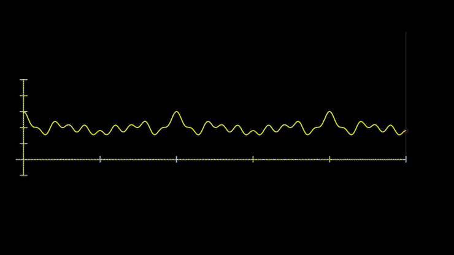
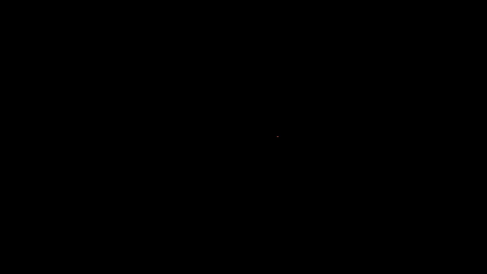
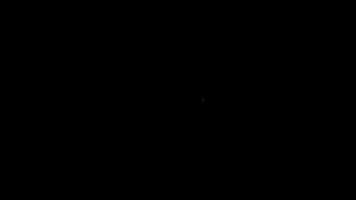
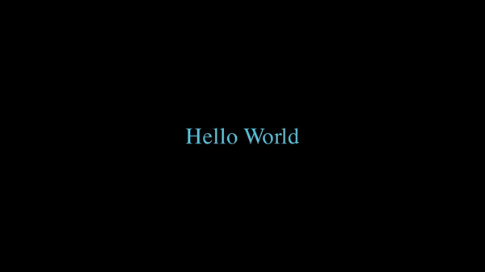
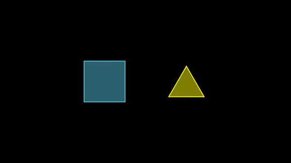
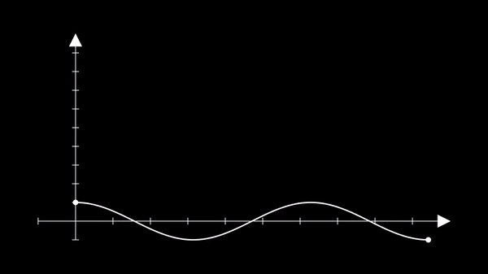

Austin Liu
Updated by Christian Ko and Bruce Qu
Have you ever watched a youtube video about math with cool animations and wondered how on earth it was made? If your answer is yes, there's a good chance that video was by 3blue1brown. 3blue1brown is a youtube channel created by Grant Sanderson designed to teach mathematics with a focus on conceptual understanding through animations.
If creating these animations through code intrigues you, then you're in the right place! In this article, we'll be looking at Manim, a python animation library that we can use to make animations like the following using only code.

3b1b Signal DecompositionBy the end of this article, you will have learned the building blocks that you need to be able to build fancy animations like this on your own. Without further ado, let's get to it!
If you've ever created animations before using GUI based animation software like Adobe After Effects, you may be wondering why we should use Manim in the first place. Can't we make the same animations using GUI programs?
Manim isn't a one size fits all solution for animation. There are some types of animations that are simply better suited to be made in different ways. Where Manim (and other programmatic animation software) shines is when your animations can benefit from leveraging the programming constructs we know and love, like variables, control flow, and especially loops.
This makes Manim a great tool for educational animations, which benefit greatly from programmatic calculations for making plots and explaining things sequentially using loops.
To install Manim, follow the instructions
here. I would
recommend using conda if you have experience with it.
With Manim installed, we can start making our first animation. To begin, create a new python file in your editor of choice and type this in:
from manim import *
class MyScene(Scene):
def construct(self):
# animation code
Every animation you create with Manim is going to start with this. Let's break it down:
from manim import *
class Animation(Scene):
Scene, which we
imported from Manim's python library. You can name this class anything you
want.def construct(self):
construct is a special method that Manim will use to "construct" the
animationMObjects (Manim Objects) are essentially the lego pieces of a Manim animation. They are the things that are displayed on the screen.
Manim's python library comes with a bunch of MObjects predefined. You can reference the full list here.
Each of these MObjects is a python class, so you create it just like you would any other object in python.
Let's add a circle to our scene:
from manim import *
class MyScene(Scene):
def construct(self):
circle = Circle(color=RED, fill_opacity=0.5)
self.add(circle)
Here we instantiate a Circle MObject into the variable circle. We then need
to tell Manim to display that circle, which we do with the add() method that
comes with the Scene class.
MObjects have a wide array of methods that can be used to manipulate its features.
Some methods which will probably be most likely used are:
arrange, which is used to sort MObjects next to each other.
flip, which flips an MObject about its center.
move_to, which moves the center of an MObject to the specified coordinates.
next_to, which moves an MObject next to another MObject.
rotate, which rotates an MObject about a specified point.
scale, which increases or decreases the MObject's size by a specified factor.
To actually create a media file using what we wrote, we need to feed our python
file into the manim program. To do so, we type this into the command line:
manim -qm -p <python_file> <scene_classname>
Simple animations are done using the Scene.play method. The list of available
animations is located
here.
There are four primary things that can be animated:
Instead of simply using Scene.add() to add our circle to the Scene like we did
previously, we can animate it in.
from manim import *
class MyScene(Scene):
def construct(self):
circle = Circle(color=RED, fill_opacity=0.5)
self.play(Create(circle))
This results in the circle being drawn in:
We can animate a transformation from one MObject to another. For instance, we
can Transform our newly added red circle into a green square.
from manim import *
class MyScene(Scene):
def construct(self):
circle = Circle(color=RED, fill_opacity=0.5)
self.add(circle)
square = Square(color=GREEN, fill_opacity=0.75)
self.play(Transform(circle, square))
The result of this is:
To bring attention to a specific MObject, we can animate an emphasis. There are
several different emphasis animations that Manim has built in. One such is
Wiggle.
class MyScene(Scene):
def construct(self):
circle = Circle(color=RED, fill_opacity=0.5)
self.add(circle)
square = Square(color=GREEN, fill_opacity=0.75)
self.play(ReplacementTransform(circle, square))
self.play(Wiggle(square))
This results in:

Square Wiggle EmphasisLastly, when we want to remove MObjects from the screen, we can do so using
animations like FadeOut.
class MyScene(Scene):
def construct(self):
circle = Circle(color=RED, fill_opacity=0.5)
self.add(circle)
square = Square(color=GREEN, fill_opacity=0.75)
self.play(ReplacementTransform(circle, square))
self.play(Wiggle(square))
self.play(FadeOut(square))
This fades out the square as expected:

Square Fade OutIf you want to create an animation that only requires using an MObject's base methods, and not any dedicated Animation class function,
then you can condense multiple self.play() lines into one using animate.
For example, the following two code blocks are identical in function.
from manim import *
class AnimateExample(Scene):
def construct(self):
circle = Circle()
self.play(Create(circle))
self.play(circle.animate.shift(LEFT))
self.play(circle.animate.scale(2))
self.play(circle.animate.rotate(PI / 2))
self.play(Uncreate(circle))
from manim import *
class AnimateCombinedExample(Scene):
def construct(self):
circle = Circle()
self.play(Create(circle))
self.play(circle.animate.shift(LEFT).scale(2).rotate(PI / 2))
self.play(Uncreate(circle))
Additionally, Uncreate can be used to animate destruction rather than a FadeOut transform. Uncreate is simply Create, but in reverse.
MObjects can be grouped together in order to do things like animate dots on a graph moving together.
Groups can be formed with VGroup, and any MObjects that are passed within that function will be added to the group defined.
from manim import *
class GroupExample(Scene):
def construct(self):
red_circle = Circle(color = RED)
green_circle = Circle(color = GREEN)
blue_circle = Circle(color = BLUE)
red_circle.shift(LEFT)
blue_circle.shift(RIGHT)
group1 = VGroup(red_circle, green_circle)
group2 = VGroup(green_circle, blue_circle)
self.add(group1, group2)
self.play(Create(red_circle))
self.play(Create(green_circle))
self.play(Create(blue_circle))
self.play((group1 + group2).animate.shift(LEFT).scale(2))
self.play(group2.animate.rotate(PI / 2))
self.play(Uncreate(red_circle))
self.play(Uncreate(green_circle))
self.play(Uncreate(blue_circle))
In this example, three RGB circles are made with two groups formed from them. First they are created, then they all move left and grow by a factor of 2 because both groups were specified to move in the code. Then the green and blue circles are rotated 90 degrees because only group2 was specified to rotate.
By utilizing groups, animating many MObjects will hopefully not be as daunting of a task.
Displaying text is pretty straightforward:
from manim import *
class TextExample(Scene):
def construct(self):
line1 = Text("You can use Manim")
line2 = Text("to create animations like these")
line3 = Text("Cool, right?")
line2.next_to(line1, DOWN)
self.play(Write(line1))
self.wait(1)
self.play(Write(line2))
self.wait(1)
self.play(FadeOut(line1), FadeOut(line2))
self.wait(1)
self.play(Write(line3))
Like the Circle object, we first create a Text object, then pass on the text that should be created. The Text object has additional
parameters that can be passed on, like font, font_size, color, and such.
Math equations and formulas go hand-in-hand in application with educational animations. However, it is incredibly difficult to read math equations written in normal text! This is where LaTeX comes in handy. LaTeX is a typesetting software system widely used in academia. It allows users to produce math equations that look good while still being intuitive. There are many tutorials on the internet regarding LaTeX if needed, whether you are new or need a refresher.
After installing a LaTeX distribution like PyLaTeX, you will use a Tex object rather than a Text object.
Now you can create math equations and add them to your Manim animations!
equation = Text(r"$E(z,t) = \hat{x}cos(2\pi \times 10^{6}t - 7z + \frac{\pi}{2})$")
While LaTeX is capable of producing matrices and tables, Manim actually has built-in Matrix and Table MObjects, but if you prefer to use LaTeX, MathTable is a specialized MObject for use with LaTex.
Now we know how to create objects, including text and equations, with Manim, animate the objects, and render the scene with Python. To create camera movement in our video, we can simply inherit from the class MovingCameraScene instead of Scene.
As our "hello world" project in moving camera scene, we are going to create an animation that zoom in and out.
class ChangingCameraWidthAndRestore(MovingCameraScene):
def construct(self):
text = Text("Hello World").set_color(BLUE)
self.add(text)
self.camera.frame.save_state()
self.play(self.camera.frame.animate.set(width=text.width * 1.2))
self.wait(0.3)
self.play(Restore(self.camera.frame))
This piece of code remembers the initial camera frame by calling the save_state() function. After we zoom in with self.play(self.camera.frame.animate.set(width=text.width * 1.2)), we then restore the original camera frame by calling the Restore() function as shown above.

Change and RestoreWe can also move the camera center to emphasize different objects on the same canvas or create a gallery swipping effect.
Here are the steps to create that effect:
selfself.play to move the camera around. Make sure to pause between movements.class MovingCameraCenter(MovingCameraScene):
def construct(self):
s = Square(color=RED, fill_opacity=0.5).move_to(2 * LEFT)
t = Triangle(color=GREEN, fill_opacity=0.5).move_to(2 * RIGHT)
self.wait(0.3)
self.add(s, t)
self.play(self.camera.frame.animate.move_to(s))
self.wait(0.3)
self.play(self.camera.frame.animate.move_to(t))
Ta-da! We have created a basic moving camera scene! However, to spice it up a little more, we can combine the above two effects, zoom in/out and moving camera!
Again, we are going to create two shapes, a square and a triangle. First, we zoom in and move the camera to the squares. Then we shift the camera to the triangle. Lastly, we zoom out to display both shapes.
Here is the code to produce that effect.
class MovingAndZoomingCamera(MovingCameraScene):
def construct(self):
s = Square(color=BLUE, fill_opacity=0.5).move_to(2 * LEFT)
t = Triangle(color=YELLOW, fill_opacity=0.5).move_to(2 * RIGHT)
self.add(s, t)
self.play(self.camera.frame.animate.move_to(s).set(width=s.width*2))
self.wait(0.3)
self.play(self.camera.frame.animate.move_to(t).set(width=t.width*2))
self.play(self.camera.frame.animate.move_to(ORIGIN).set(width=14))

Move and ZoomNow you might be asking, is this effect applicable to other shapes, or graphs? We have been working with squares, triangles, and circles, so wouldn't it be exciting to see those effects in the xy plane?
First, we need to create an Axes with ax = Axes(x_range=[-1,10], y_range=[-1,10])
And then, we will need to plot a function on the x-y plane. In this example, we will plot a cosine function. graph = ax.plot(lambda x: np.cos(x), color=WHITE, x_range=[0, 3 * PI])
We can even put dots on the graph to denote the start and the end. Additionally, these two points can be used to indicate the start and the end of our camera movement.
dot_1 = Dot(ax.i2gp(graph.t_min, graph))
dot2 = Dot(ax.i2gp(graph.t_max, graph))
self.add(ax, graph, dot_1, dot_2)
Here is the complete code:
class MovingCameraOnGraph(MovingCameraScene):
def construct(self):
self.camera.frame.save_state()
ax = Axes(x_range=[-1, 10], y_range=[-1, 10])
graph = ax.plot(lambda x: np.cos(x), color=WHITE, x_range=[0, 3 * PI])
dot_1 = Dot(ax.i2gp(graph.t_min, graph))
dot_2 = Dot(ax.i2gp(graph.t_max, graph))
self.add(ax, graph, dot_1, dot_2)
self.play(self.camera.frame.animate.scale(0.5).move_to(dot_1))
self.play(self.camera.frame.animate.move_to(dot_2))
self.play(Restore(self.camera.frame))
self.wait()

Movement in coordinate planeWith just these basics, you know enough to explore and create more useful animations using Manim. There are more concepts to Manim that will allow you to create more expressive animations, but with what we have learned, you would be able to create animations like the one shown in the introduction to this article.
The Manim documention is a great resource that is very thorough in its explanations, so be sure to check it out if you want a deeper dive.